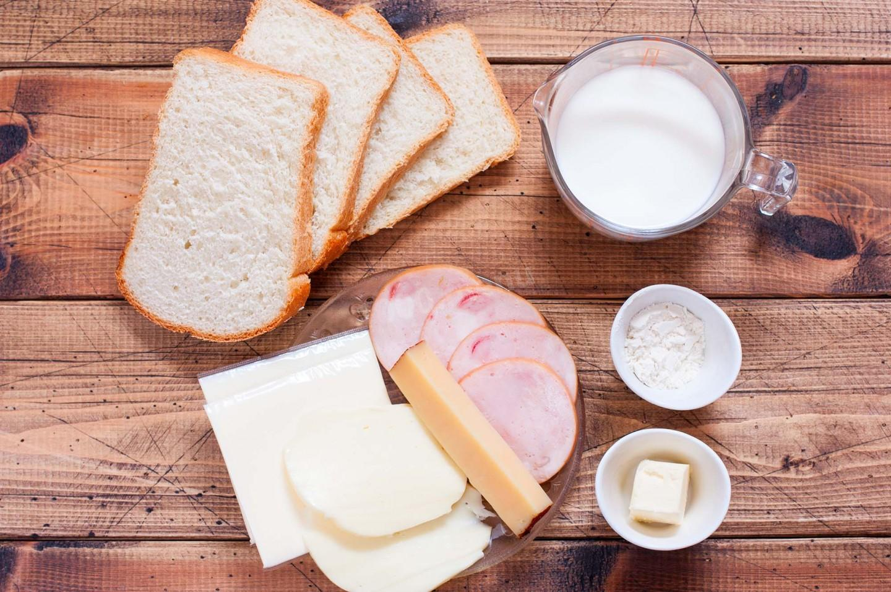
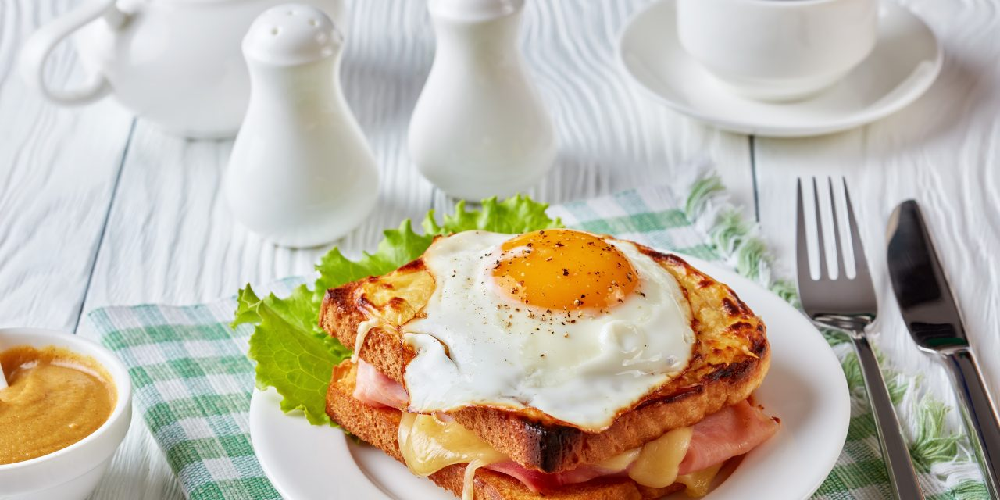

Croque madam by Alex
Ingredients
- 2 Eggs
- Milk 100ml
- Bread 2 slices
- Cheese 2 slices
- Ham 2 slices
- Butter
- Mustard
- Spices
- Oil

Method
- Cut two slices of bread 1 cm
- Grease each slice with butter, and then with mustard
- Put 2 layers of ham and 2 layers of cheese on the first piece of bread, and put on the second piece of bread
- Mix one egg with milk, season with spices and dip the sandwich on both sides
- Heat the oil in a pan and fry until golden brown on top and bottom
- For the top, prepare the sunny-side up from one egg

intellectual property of Alex Bereza